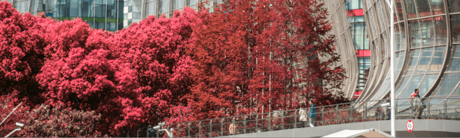
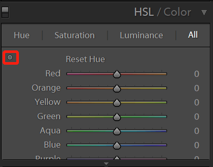
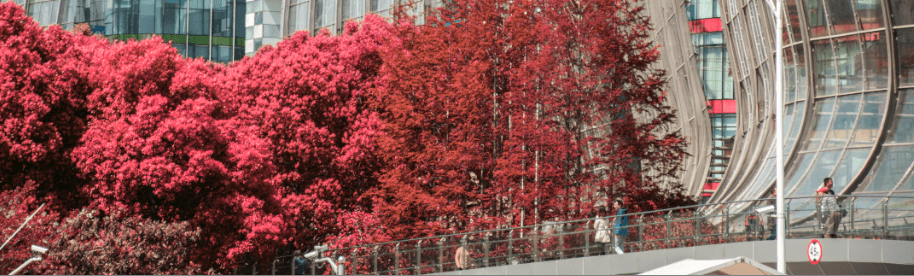
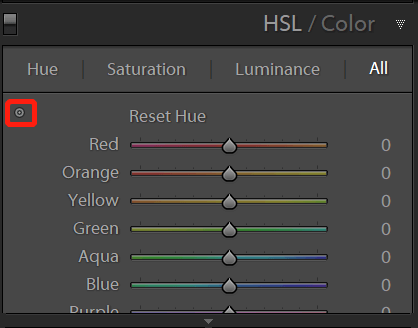
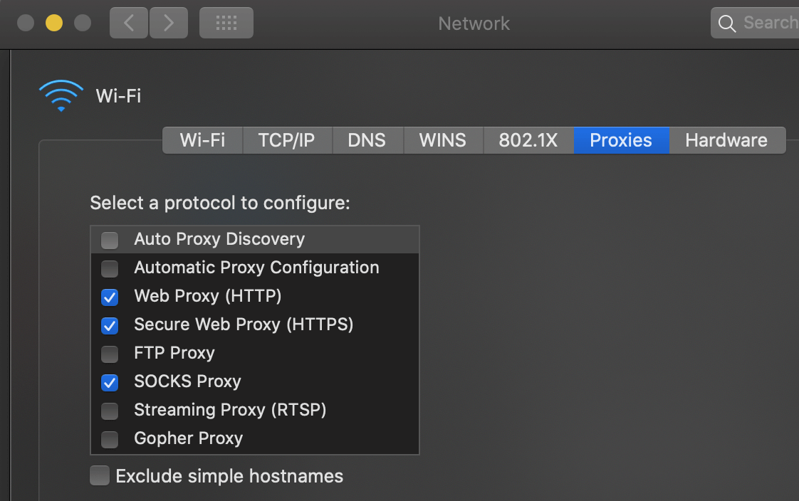

使用 graduated filter 处理特定颜色的区域 in lightroom

在 lightroom 中想要改变一个颜色的色相，最简单的方法就是在 hue panel 来处理：

通过移动某个颜色的滑块来改变这一颜色的色相，或者点击左上方的按钮，然后在图片中拖动来直接修改当前区域的色相。同理也可以修改饱和度和亮度。
这里介绍另一种通过 graduated filter 工具来处理，控制自由度更大，可以设定颜色影响的范围，也可以调节修改部分的亮度清晰度等信息。

在 lightroom 中想要改变一个颜色的色相，最简单的方法就是在 hue panel 来处理：

通过移动某个颜色的滑块来改变这一颜色的色相，或者点击左上方的按钮，然后在图片中拖动来直接修改当前区域的色相。同理也可以修改饱和度和亮度。
这里介绍另一种通过 graduated filter 工具来处理，控制自由度更大，可以设定颜色影响的范围，也可以调节修改部分的亮度清晰度等信息。
最近升级了我的 2015 款 MacBook Pro 13，期间遇到一些问题，这里做一些流水记录：
关于安装新 SSD 后待机耗电增加参考：https://blog.niekun.net/archives/1622.html
最近发现设置里的同步设置选项无法启用，虽然我只有这一台 Windows 电脑，但是无法打开这一功能还是让我有点别扭。经过多方搜索终于发现问题了，原来是我添加了另一个账户用来使用 office 365 导致的。
在平时使用中，我一般是在浏览器内设置代理服务器，还有就是终端设置了代理切换脚本来实现快速切换，系统默认没有代理。关于 macOS/Windows 下设置终端代理可以参考我之前的文章：https://blog.niekun.net/archives/97.html
如果想要设置系统级的代理，需要在 system preference - network - proxies 里设置，常用的需要设置 http/https/socks 代理，基本覆盖大多数应用的流量了：

20-07-12 update:
经过上周几天的观察和这个周末两天休眠的情况，发现一晚上休眠耗电基本2%左右，但是连续休眠两天发现跑了50%电量，今天下午来通过 pmset -g log | grep Wake 查看日志，发现一些情况：
2020-07-10 17:15:08 +0800 Wake Requests [*process=powerd request=AdaptiveWake deltaSecs=50391 wakeAt=2020-07-11 07:14:59] [process=powerd request=UserWake deltaSecs=150292 wakeAt=2020-07-12 11:00:00 info="com.apple.alarm.user-visible-com.apple.remindd.time-alarm,315"]
...
2020-07-12 11:00:02 +0800 Assertions PID 127(powerd) Created UserIsActive "com.apple.powermanagement.wakeschedule" 00:00:00 id:0x0x900008234 [System: DeclUser IntPrevDisp kDisp]
...发现一些和 reminder 和 schedule 有关的唤醒日志。执行 pmset -g sched 的确有很多 remainder 的计划任务：
[email protected] ~ % pmset -g sched
Scheduled power events:
[0] wake at 07/13/20 08:01:56 by 'com.apple.alarm.user-visible-Weekly Usage Report'
[1] wake at 07/17/20 20:00:00 by 'com.apple.alarm.user-visible-com.apple.remindd.time-alarm' User visible: true
[2] wake at 07/19/20 21:00:00 by 'com.apple.alarm.user-visible-com.apple.remindd.time-alarm' User visible: true
[3] wake at 07/19/20 21:00:00 by 'com.apple.alarm.user-visible-com.apple.remindd.time-alarm' User visible: true这些可能跟我在 remainder 设定的一些事项有关吧，经过查询，网上人也发现这个问题：eminders app waking mac from sleep，貌似目前没有好的解决方法。